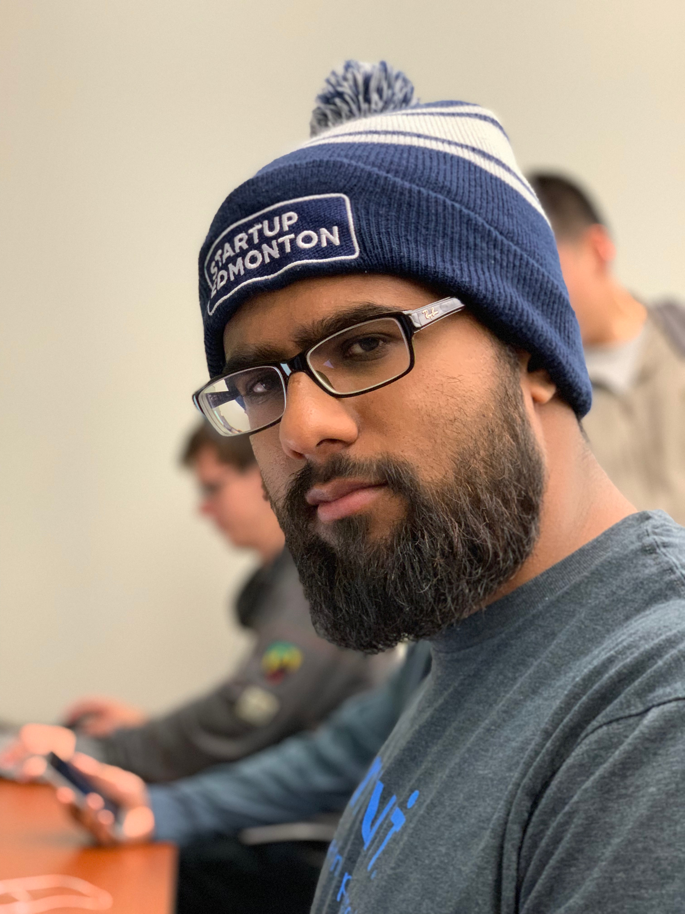

About Me:
I am a fifth year Computing Science student who wants to expand more experience in the industry and am looking for work

Experience
Intuit: Mountain View, CA (May 2018 - August 2018)
Software Developer Intern
- Created a dashboard with React that displays the statuses of different micro-services.
- Retrieved micro-service metadata via API calls.
Intuit: Edmonton, AB January 2017 - December 2017
Software Developer Coop
- Ensured the quality of releases for the First Time Use (FTU) and homepage teams by creating comprehensive automated tests with WebdriverIO and the Chai/Mocha testing frameworks.
- Developed a testing framework to assist developers in creating their own automated tests as a part of the Epic team.
University of Alberta: Edmonton, AB (June 2013 - August 2013
Intern
- Used genetic algorithms to determine the optimal placement of sensors in the Smart Condo project with C++.
University of Alberta: Edmonton, AB (June 2012 - August 2012
Intern
- Calculated the density of sensors placed in a network in the Smart Condo project to determine optimal placement of the sensors using C++.
Why should you care?
I excel in working in teams, and also enjoy discovering new technologies. I keep up with the latest tech and try to incorporate them into my projects.
Skills
- Python
- C
- C++
- Javascript
- React
- Git
- Teamwork